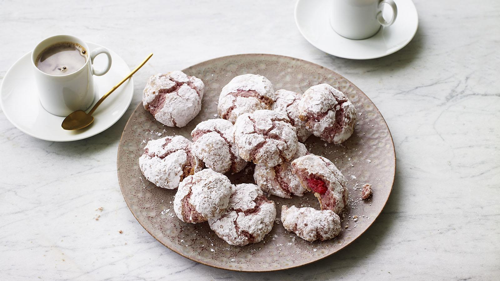

Nadiya's Raspberry Amaretti

Description
These light chewy biscuits are perfect with coffee. They have a fresh raspberry hidden inside.
Ingredients
- butter, for greasing
- 4 free-range egg whites
- 340g caster sugar
- 340g ground almonds
- 18g freeze-dried raspberries, blitzed to a powder
- 1 tsp almond extract
- 18 small fresh raspberries
- 200g icing sugar
Instructions
- Preheat the oven to 190C/170C Fan/Gas 5 and line 2 large baking trays with baking paper. Grease them very lightly to allow the paper to stick to the tray.
- Whisk the egg whites in a large bowl until firm. Add the sugar and fold through gently using a spatula or metal spoon. Add the almonds, raspberry powder and almond extract and mix thoroughly until you have a smooth paste.
- Take a heaped tablespoon of mixture, about 40g/1½oz if you want to be precise, and shape it into a flat round disc. Wrap the disc around a fresh raspberry to form a ball shape, pinching it together underneath so that the raspberry is completely enclosed. The paste may crack a bit along the top, but don’t worry.
- Place the icing sugar in a large bowl, drop each biscuit ball into the icing sugar and roll around until fully and generously coated. Place seam-side down on the baking trays, making sure they are about 2cm/¾in apart, as they will spread a little during baking.
- Bake for 12–15 minutes until they are just lightly golden. Leave to cool on the tray for 10 minutes before transferring to a wire rack to cool.
Notes
This recipe is an original recipe from Nadiya Hussain. It can be found here.
Back to main page